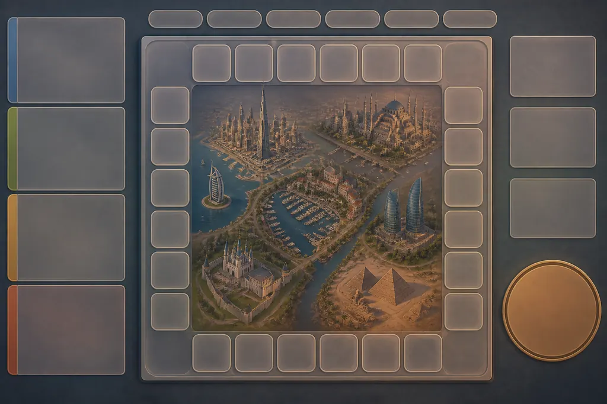
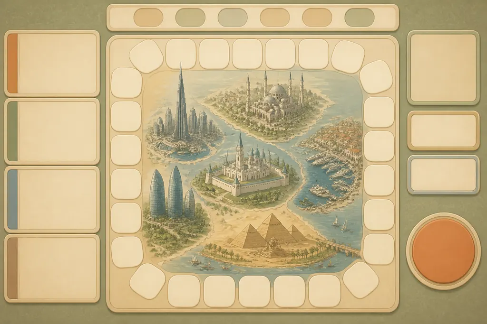
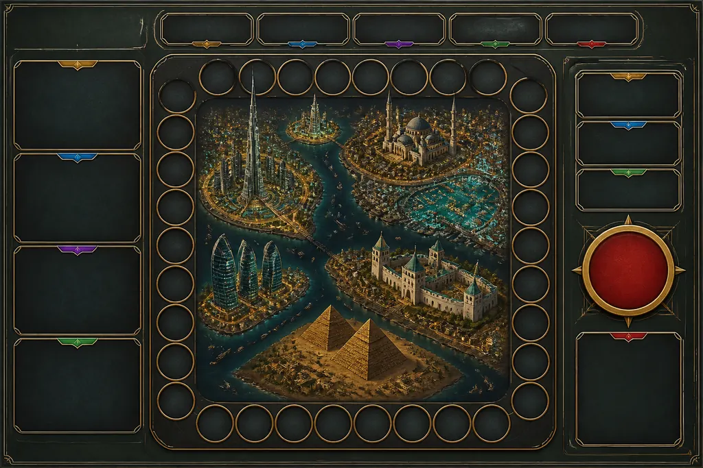
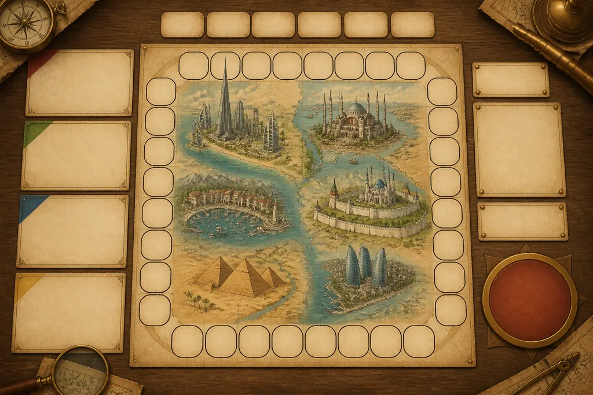
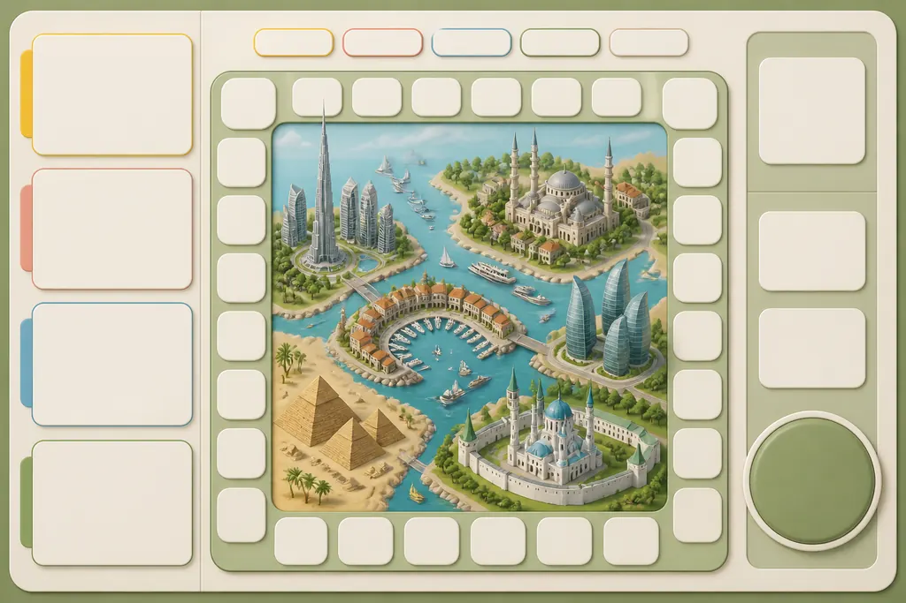

Пять вариантов целого экрана: доска с городами в центре, слева панель игрока, сверху фишки, справа кнопка и цифры. Это эталон вида, а не готовый экран: живые панели картинкой быть не могут — цифры в них меняются каждый ход. Картинка задаёт язык (материал, скругления, свет, палитру), а рабочий интерфейс я соберу кодом поверх сгенерированного фона — ровно так, как сейчас сделаны клетки доски. Текста в картинках нет намеренно: буквы модель путает.




